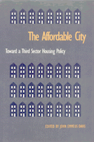

<body bgcolor="#FFFFFF" text="#000000" link="#0000FF" vlink="#CC0000" alink="#CC0000"><center><hr width="350" size="1" align="center" noshade>Advocates and experts weigh the value of recent community-based, nonmarket housing programs<hr width="350" size="1" align="center" noshade><p><a href="https://cdcshoppingcart.uchicago.edu/Cart/ChicagoBook.aspx?ISBN=9781566391092&&PRESS=temple" target="_top">Buy this book!</a> | <a href="https://cdcshoppingcart.uchicago.edu/Cart/Cart.aspx?PRESS=temple" target="_top">View Cart</a> | <a href="https://cdcshoppingcart.uchicago.edu/Cart/Cart.aspx?PRESS=temple" target="_top">Check Out</a></p><p></p></center><!--none//--><h1>The Affordable City</h1>
<H2>Toward a Third Sector Housing Policy</H2>
<h3>edited by John Emmeus Davis</h3>
<P>cloth 1-56639-109-1 $71.50, Jan 94, <FONT COLOR=#990033>Out of Stock Unavailable</FONT>
<br>Electronic Book 1-59213-074-7 $.00 <FONT COLOR=#990033>Out of Stock Unavailable</FONT>
<BR> 320 pp
6x9
15&nbsp;tables 2&nbsp;figures
</P><p>Forced in the 1980s to develop new sources of funding, municipalities are now creating new strategies for producing housing citizens can afford. One of the most promising of those schemes is third sector housing, a private non market alternative to publicly owned projects. The ten essays comprising <I>The Affordable City</I> provide case studies of political struggles to move toward this model in such cities as Burlington, Boston, and San Diego.
<BR>&nbsp;<h2>Excerpt</h2><P>Excerpt available at <a href="http://www.temple.edu/tempress">www.temple.edu/tempress</a></p>
<BR>&nbsp;<h2>Contents</h2><P>
<p>Acknowledgments
<br>Introduction: Toward a Third Sector Housing Policy &#150 John Emmeus Davis
<p><b>Part I: Components and Dilemmas of a Third Sector Housing Policy</b>
<br>1. Social Housing: U.S. Prospect, Canadian Reality &#150 Peter Dreier and J. David Hulchanski
<br>2. Beyond the Market and the State: The Diverse Domain of Social Housing &#150 John Emmeus Davis
<br>3. Diminishing Returns: A Critical Look at Subsidy Recapture &#150 Helen S. Cohen
<br>4. Community-Based Housing Strengths of the Strategy amid Dilemmas that Won't Go Away &#150 Rachel G. Bratt
<br>5. Will All Tenants Win? &#150 Woody Widrow
<p><b>Part II: Third Sector Housing in Action: Policies, Programs, and Plans</b>
<br>6. Building the Progressive City: Third Sector Housing in Burlington, Vermont &#150 John Emmeus Davis
<br>7. Boston in the 1980s: Toward a Social Housing Policy &#150 Chuck Collins and Kirby White
<br>8. the Legacy of <I>Mt. Laurel</I>: Maintaining Affordability in New Jersey's Inclusionary Developments &#150 Alan Mallach
<br>9. Housing Trust Funds &#150 Mary E. Brooks
<br>10. Zigzagging toward Long-Term Affordability in the Sunbelt: The San Diego Housing Trust Fund &#150 Nico Calavita, Kenneth Grimes, and Susan Reynolds
<p>About the Contributors
<br>Index
</P><BR>&nbsp;<H2>About the Author(s)</H2>
<P><b>John Emmeus Davis</b> has directed housing policy in Burlington, Vermont, for over a decade. He has also taught at Tufts, New Hampshire College, and MIT.</P>
<P>Contributors: Peter Dreier, J. David Hulchanski, Helen S. Cohen, Rachel G. Gratt, Woody Widrow, Chuck Collins, Kirby White, Allan Mallach, Mary E. Brooks, Nico Calavita, Kenneth Grimes, Susan Reynolds, and the editor.</P>
<BR><H2>Subject Categories</H2>
<p><A HREF="/tempress/urban.html" TARGET="_top">Urban Studies</a>
</p>
<BR><h2 class="inpageheading">In the series</H2>
<P><I><a href="http://www.temple.edu/tempress/conflicts.html" onMouseOver="window.status='Click for other books in this series!'; return true;" onMouseOut="window.status=''; return true;" target="_top">Conflicts in Urban and Regional Development</a></i>, edited by John R. Logan and Todd Swanstrom.
</p><p><i>Conflicts in Urban and Regional Development</i>, edited by John R. Logan and Todd Swanstrom, includes books on urban policy and issues of city and regional planning, accounts of the political economy of individual cities, and books that compare policies across cities and countries.</p>
<p align="center"><a href="https://cdcshoppingcart.uchicago.edu/Cart/ChicagoBook.aspx?ISBN=9781566391092&&PRESS=temple" target="_top">Buy this book!</a> | <a href="https://cdcshoppingcart.uchicago.edu/Cart/Cart.aspx?PRESS=temple" target="_top">View Cart</a> | <a href="https://cdcshoppingcart.uchicago.edu/Cart/Cart.aspx?PRESS=temple" target="_top">Check Out</a></p><p><font face="Arial" size="1"><a href="copyright.html" onMouseOver="window.status='Web Copyright Policy';return true;" onMouseOut="window.status=''" title="Web Copyright Policy">&copy;</a> 2015 <a href="http://www.temple.edu" target="new" onMouseOver="window.status='Link to Temple University home page';return true;" onMouseOut="window.status=''" title="Link to Temple University home page">Temple University</a>. All Rights Reserved. http://www.temple.edu/tempress/titles/1128_reg.html</font></p>